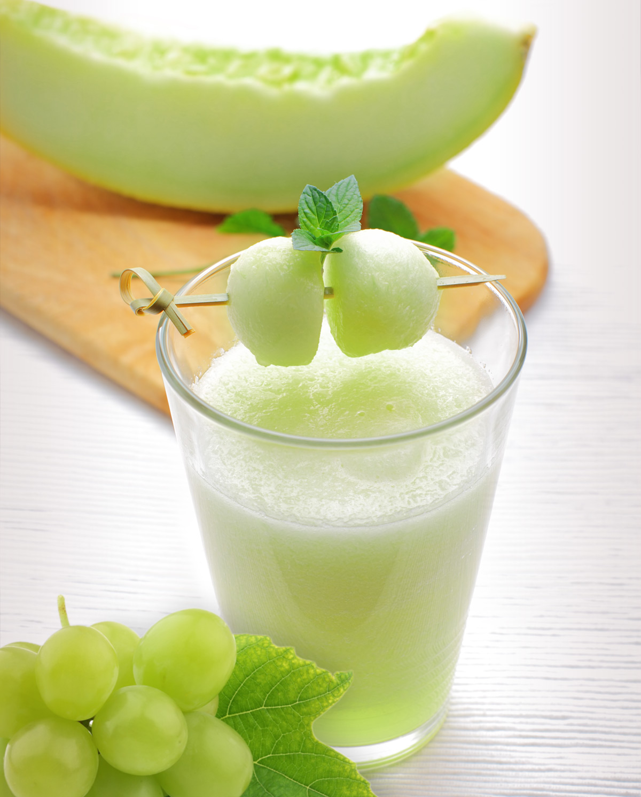

Фреш от ябълка
Ябълките съдържат витамини, минерали и голямо разнообразие от съставки, които помагат в борбата
с рака. Те се комбинират много добре с всеки зеленчук, създавайки много нови вкусни комбинации.
Кората на ябълката съдържа повече пектин и полифенол затова е по-добре да се изцежда с кората
Цена: 1,89лв.
Фреш от портокал
Сочни и сладки, известни с високата концентрация на витамин С, портокалите са идеалната закуска,
чудесно съчетание за много храни, и затова съвсем не е чудно, че са едни от най-популярните плодове
по света. Родината им е Азия, а в Европа навлизат през 15 век.
Цена: 1,99лв.
Фреш от къпини
Този малък плод има уникална структура, която всъщност кореспондира с хранителните му качества.
Тя осигурява по-голямо количество семена и пектин, превръщайки плода в едно от най-богатите на
фибри растения, които познаваме.
Цена: 2,99лв.

Фреш от пъпеш
Един от най-уханните летни плодове, истински "двойник" на жаркото слънце, събрал в себе си
палитра от витамини, минерали и уникален нежен вкус. Пъпешът храни тимуса и щитовидната жлеза,
а тяхното добро функциониране поддържа имунната система в изправност.
Цена: 3,50лв.